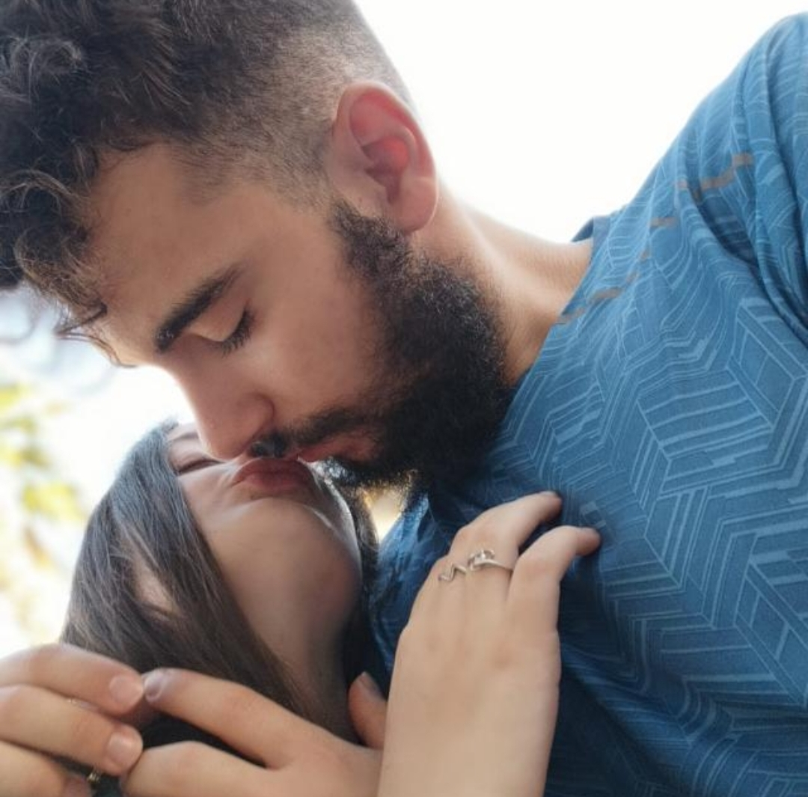
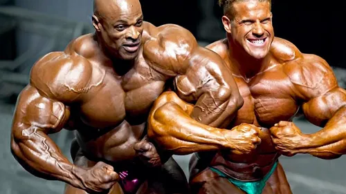
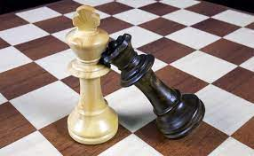
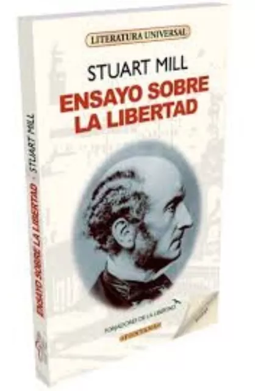
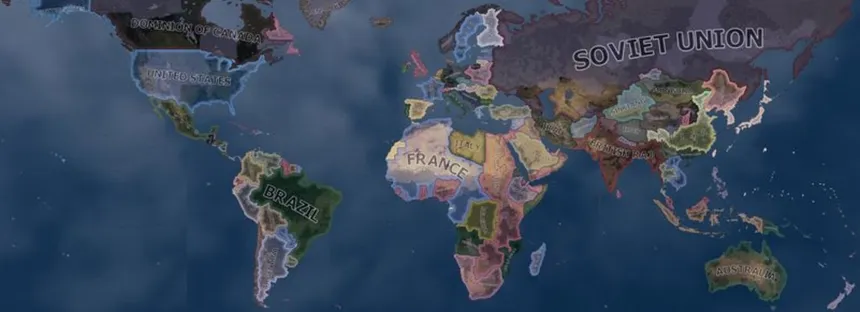
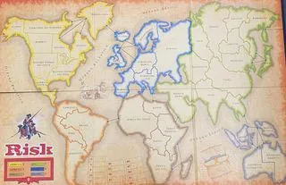

¡Hola!, soy Antonio González.Soy un alumno de 2º BTO y esta es mi página web. Tengo 17 años y soy un aficionado al deporte, la ciencia y la política. Me gustaría en un futuro llegar a ser bombero, pero antes de ello me guataría estudiar una carrera como física o matemáticas. Actualmente vivo en Sabiote, un pueblo de la provincia de Jaén. Espero que podais disfrutar de mi página web y conocer un poco más sobre mí :)

Empezaré por la que probablemente sea mi actividad favorita. Desde que soy pequeño amo el deporte, pero el gimnasio para mi destaca por encima de todos los demás sin ninguna duda. Me encanta sentir como poco a poco progreso en mi fuerza y técnica a la vez que estoy mejorando mi salud y condición física. Mucha gente cree que este es un deporte para brutos, pero para nada es así. ¡Probadlo y vereis!

En segundo lugar os hablaré de otro deporte que me encanta, uno muy distinto del anterior. El ajedrez es un deporte increiblemente beneficioso para la mente. Además este es mucho más divertido y sencillo (a niveles básicos) de lo que puede parecer en primera instancia. Creo que es importante hacer también este tipo de actividades y personalmente disfruto muchísimo aprendiendo y mejorando mi nivel de ajedrez día a día.

Actualmente, como ya mencioné antes, estoy cursando segundo de BTO. Además, estoy en una academia de inglés ya que, para mis futuras oposiciones de bombero, me ayudaría mucho tener el nivel de C1 en inglés puesto que suma hasta un punto en muchas provincias. A día de hoy estoy en el nivel B2 con muchas ganas de examinarme pronto, más concretamente antes de selectividad.
Por otro lado, además del estudio y del deporte creo que es crucial el crecer como persona y formar unos ideales claros y con base, sobretodo a mi edad. Como ya dije en la introducción adoro la política y pienso que todos y cada uno de los adolescenters deberíamos formarnos y aprender sobre esta para poder crear un futuro mejor. El libro que estoy leyendo ahora se llama Ensayo sobre la libertad.

Por último, os hablaré de un proyecto más a futuro que tengo. Cabe recalcar que desde mi infancia he sido un apasionado de los juegos de estrategia. Algún día me gustaría desarrollar algún juego basado en una conquista mundial. En él, cada jugador se encargará de gobernar un país, podrá controlar los impuestos que le cobrará a sus habitantes, política exterior, inversiones, leyes, etc. He probado versiones muy básicas con mis amigos y, aunque me queda muchísimo por mejorar de este juego, lo hemos disfrutado muchísimo.
|  |  |